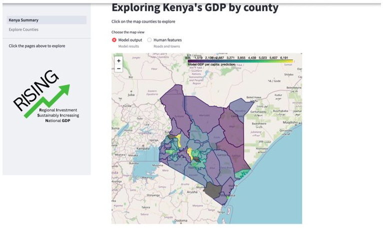
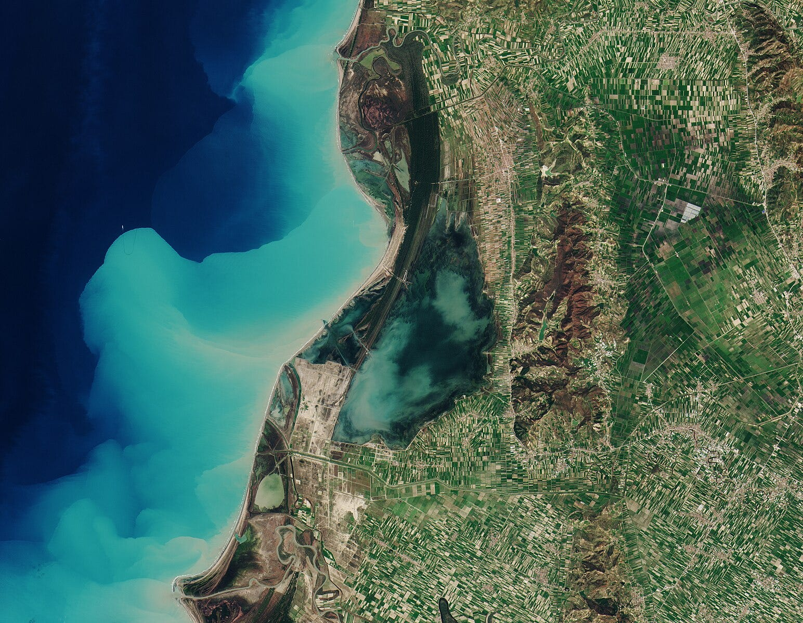

I am a Data Scientist with experience in applied ML research, and in
building and deploying ML pipelines. I thoroughly enjoy turning messy data
into reliable systems that drive value.
While researching advanced materials and manufacturing technologies, I
began applying machine learning and signal processing techniques to
extract insights from complex manufacturing systems and aid in timely
decision-making. I am passionate about engineering intelligent systems and
deploying innovative AI solutions to solve real-world problems.

UN Datathon (RISING)
Geospatial analysis & machine learning for Sustainable Development
Goals (SDGs) investment decisions
Skills & Tools: Geospatial Data Analysis, Data
Wrangling, Feature Engineering, Model Development, Evaluation,
Explainability and Deployment; GeoPandas, GDAL, QGIS, Dask, streamlit,
Folium, scikit-learn, Pandas, plotly, Seaborn

Construction Open Data Project
Interpretable house price prediction across UK regions using diverse
socio-economic features
Skills & Tools: Exploratory Data Analysis, Geospatial
Analysis, Data Wrangling, Data Engineering, Hypothesis Testing, Feature
Engineering, Machine Learning Model Development, Evaluation &
Deployment; Pandas, GeoPandas, xarray, Rasterio, streamlit, MlFlow
Visual Similarity Search
Visual similarity search using deep metric learning
Skills & Tools: Computer Vision, Metric Learning, Deep
Learning, Image Retrieval, Representation Learning, Exploratory Data
Analysis, Data Preprocessing, Feature Engineering, Model Fine-Tuning,
Sampling Strategies (PK Sampling), Model Evaluation (Recall@K),
Nearest-Neighbor Search, Error Analysis & Visualization, Domain Shift
Analysis, Reproducible ML Pipelines; PyTorch, torchvision, timm
(ConvNeXt), pytorch-metric-learning, FAISS, NumPy, Pandas, Pillow,
Matplotlib, TensorBoard.

Time Series Foundation Models
Exploring foundation models for highly irregular time series
modeling/forecasting
Skills & Tools: TerraTorch, PyTorch

Remote Sensing Geospatial Foundation Models
Fine-tuning geospatial foundation models for segmentation,
classification and change detection tasks for remote sensing
applications
Skills & Tools: TerraTorch, PyTorch